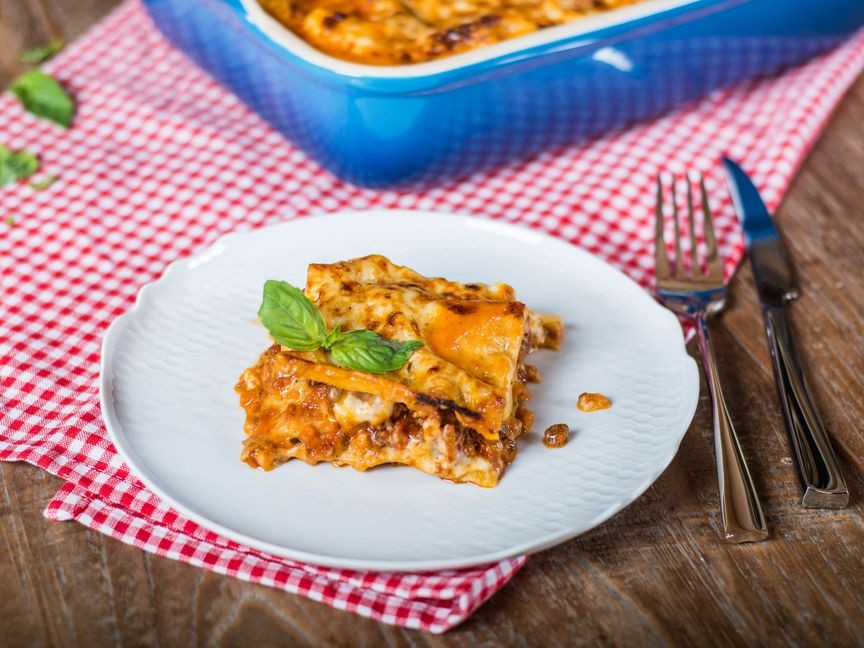

Easy Lasagna Recipe

"Some recipes don't need much of an introduction, like this classic Italian lasagna. You know what to expect here: an intense, hearty Bolognese sauce, sheets of perfectly cooked pasta, creamy béchamel, and a golden-brown crust. This recipe shows you how to easily prepare this classic Italian dish yourself—from scratch."
Ingredients
- 1 Garlic clove
- 1 Onion
- 2 Carrots
- 500g Ground beef
- 800g Canned crushed tomatos
- 2 tsp Dried oregano
- 50g Unsalted butter
- 40g Flour
- 500ml Milk
- 1/4 tsp Ground nutmeg
- 150g Lasagna noodles
- 60g Parmesan cheese
- Olive Oil
- Salt
- Pepper
Steps
- Finely chop garlic. Peel and dice onion and carrots.
- Heat some olive oil in a large pot and sauté onions, carrots, and garlic. Add ground beef to brown, breaking it up with a cooking spoon. Season with salt and pepper.
- Now, add crushed tomatoes and season again with salt and pepper. Simmer covered over medium heat for approx. 15 - 20 min. Stir in dried oregano.
- Meanwhile, preheat oven to 200°C/390°F. For the béchamel sauce, melt butter in a small sauce pan. Add flour and sauté, stirring constantly to form a roux.
- Add cold milk in portions and reduce over medium heat, stirring occasionally, for approx. 5 to 8 min. Season with nutmeg and salt and pepper.
- Cover bottom of baking dish with a layer of meat sauce. Top with lasagna sheets and béchamel sauce. Repeat procedure until ingredients are used up. Finish off with béchamel sauce.
- Top with freshly grated Parmesan and bake in preheated oven at 200°C/390°F for approx. 30 to 40 min. on the middle rack until golden. Serve hot in baking dish.
Return to main page